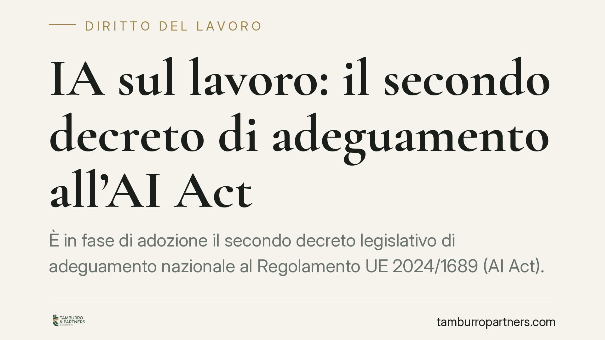

IA sul lavoro: il secondo decreto di adeguamento all'AI Act
È in fase di adozione il secondo decreto legislativo di adeguamento nazionale al Regolamento UE 2024/1689 (AI Act). Il testo disciplina i poteri delle Autorità nazionali sull'intelligenza artificiale e l'impiego dei sistemi di IA in ambito formativo, professionale, lavorativo, sanitario e nella pubblica amministrazione. Per i datori di lavoro è il momento di mappare gli strumenti automatizzati già in uso.

Il quadro: un decreto di adeguamento ancora da verificare
Secondo le informazioni disponibili alla data di redazione, è in corso di adozione il secondo decreto legislativo che adegua l'ordinamento interno al Regolamento UE 2024/1689, noto come AI Act. Il provvedimento interverrebbe su due fronti: i poteri delle Autorità nazionali designate per la vigilanza sull'IA e la disciplina dell'uso dei sistemi di intelligenza artificiale in settori sensibili, tra cui quello lavorativo.
Una precisazione di metodo. Il numero e la data di pubblicazione in Gazzetta Ufficiale del decreto non risultano, al momento, confermati da fonti ufficiali consultabili. Trattiamo quindi il dato come da verificare: prima di assumere decisioni organizzative è indispensabile riscontrare il testo definitivo in Gazzetta Ufficiale. Il ragionamento che segue muove dall'impianto dell'AI Act, che è invece norma vigente e stabile.
Inquadramento normativo
L'AI Act classifica i sistemi di IA per livello di rischio. I sistemi impiegati nella gestione del rapporto di lavoro rientrano, in linea di principio, tra quelli ad alto rischio: l'Allegato III, punto 4 del Regolamento include espressamente i sistemi destinati a selezione del personale, decisioni su promozioni e cessazioni, assegnazione di mansioni e monitoraggio delle prestazioni.
La qualifica di alto rischio comporta obblighi distinti a seconda del ruolo. Il provider (chi sviluppa o immette sul mercato il sistema) risponde della conformità tecnica, della documentazione e della gestione del rischio. Il deployer (chi utilizza il sistema nell'esercizio della propria attività — tipicamente il datore di lavoro) deve invece garantire un uso conforme alle istruzioni, assicurare la sorveglianza umana e informare i lavoratori interessati. La distinzione è spesso trascurata, ma determina chi risponde di che cosa.
Sul piano interno, gli obblighi informativi verso i lavoratori restano governati dal cosiddetto Decreto Trasparenza (D.lgs. 104/2022), che ha introdotto nel D.lgs. 152/1997 l'art. 1-bis, dedicato all'informativa sull'uso di sistemi decisionali o di monitoraggio automatizzati. Il riferimento alla rubrica esatta va comunque riscontrato sul testo coordinato vigente. A ciò si aggiunge l'art. 4 dello Statuto dei lavoratori (Legge 300/1970) in materia di controlli a distanza. Ne risulta una triplice cornice — AI Act, Decreto Trasparenza, Statuto — che il datore deve considerare in modo unitario.
Implicazioni pratiche
Per l'impresa che impiega software di screening dei curricula, algoritmi di assegnazione turni, piattaforme di performance management o strumenti di monitoraggio della produttività, le conseguenze sono concrete.
In primo luogo, molti di questi strumenti ricadono nella categoria ad alto rischio: non è sufficiente che il fornitore dichiari la conformità. In qualità di deployer, il datore conserva obblighi propri — sorveglianza umana, informativa, valutazione d'impatto nei casi previsti.
In secondo luogo, gli obblighi informativi ex art. 1-bis D.lgs. 152/1997 operano a prescindere dall'AI Act: anche un sistema non qualificato ad alto rischio può far scattare l'informativa se incide su decisioni o monitoraggio automatizzati.
Infine, il decreto di adeguamento dovrebbe definire poteri ispettivi e sanzionatori delle Autorità nazionali. La concreta portata dipenderà dal testo definitivo e dalle prime prassi applicative.
Cosa fare in concreto
- Censite tutti i sistemi automatizzati in uso nei processi HR, distinguendo per funzione (selezione, valutazione, monitoraggio, assegnazione mansioni).
- Qualificate il ruolo dell'azienda rispetto a ciascun sistema: provider, deployer o entrambi. Da questa qualifica discendono obblighi diversi.
- Verificate l'informativa ai lavoratori ex art. 1-bis D.lgs. 152/1997 e il coordinamento con eventuali accordi o autorizzazioni ex art. 4 Statuto.
- Richiedete ai fornitori la documentazione di conformità all'AI Act e le istruzioni d'uso: sono il presupposto per un impiego corretto.
- Monitorate la pubblicazione del testo definitivo in Gazzetta Ufficiale: è opportuno avviare per tempo la revisione dei sistemi, senza attendere le prime prassi delle Autorità.
La materia è in evoluzione. Un riscontro puntuale sul testo normativo, una volta pubblicato, è condizione preliminare a qualsiasi scelta organizzativa.
---
*Contributo informativo a cura di Tamburro & Partners — Avv. Giuseppe Tamburro. Non costituisce parere legale.*
Ogni storia di lavoro ha i suoi tempi.
Se gestisci HR e vuoi un confronto su contenzioso, ispezioni o licenziamenti, scrivi allo studio. Ti rispondiamo entro un giorno lavorativo.